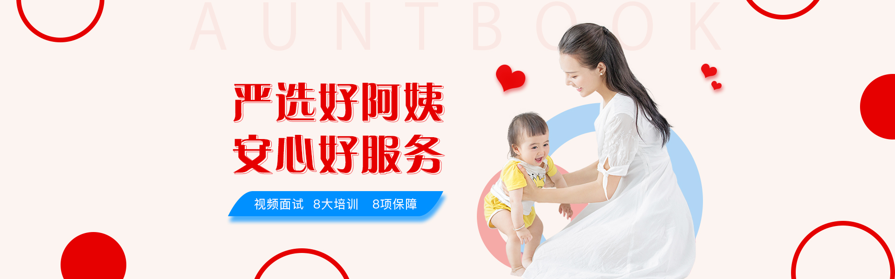
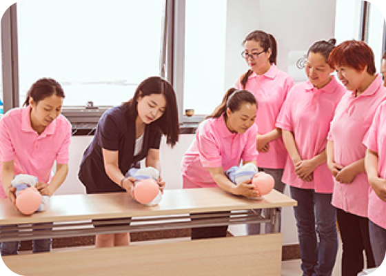
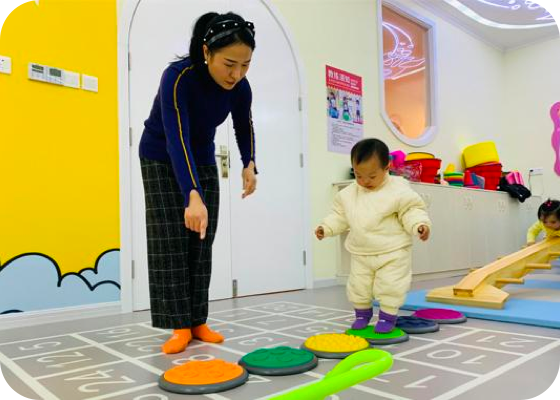
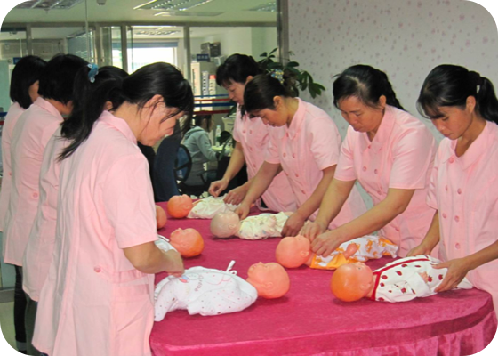
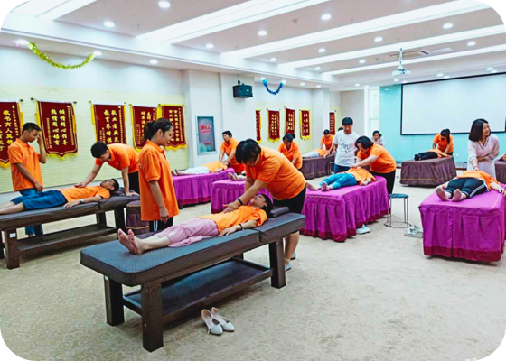
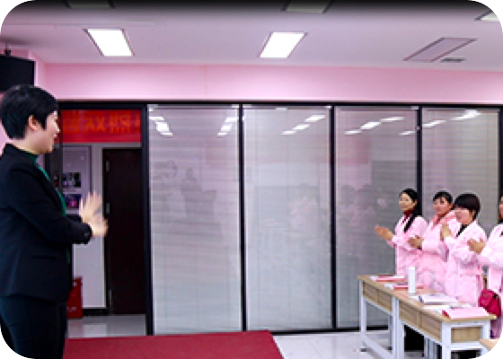
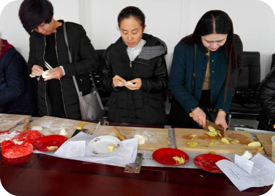
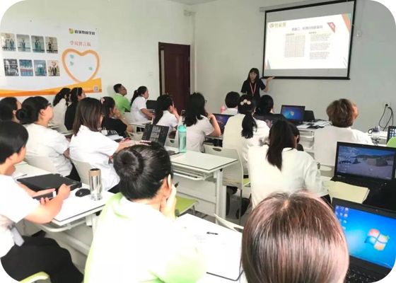

每一个阿姨都来自一个幸福的家庭！
全国热线
400-116-7788


服务有保障，生活更安心
背景调查
1 身份信息是否真实
2 有无社会不良记录
3 有无法院诉讼
健康体检
1 有无传染疾病
2 有无重大疾病隐患
3 妇科、HV、结核
4 7日内核酸检测
家政保险
1 雇主家庭人身及财产
2 人员身故、意外伤害
3 公共交通、病假误工费
4 法律费用

诚信档案
1 安全真实家人担保
专业培训持证上岗
1 专业技能培训
2 岗前培训
3 服务意识培训
客户好评
1 老客户推荐
2 老阿姨介绍
3 平台金牌阿姨
先试工再签约
1 专业技能测试
2 服务态度测试
3 无条件调换
专业团队
1 产前护理专家
2 母婴护理专家
3 早教启蒙名师
4 家务师团队
为了节省您的时间，您可以直接委托在线客服帮您挑选阿姨，或致电客服热线
400-116-7788
严格筛选，确保服务质量

高级育婴师培训

蒙氏早教

母婴护理
小儿推拿

产后康复

催乳师培训

家庭厨师培训

管家培训
我们的承诺
our promise
01
先培训后上岗
每个阿姨都经过专业的技能培训、筛选，放心可靠。
02
免费更换阿姨
一年内免费更换阿姨
03
100%背景调查
公安联网，确保阿姨无犯罪记录、无征信问题。
04
100%健康体检
正规医院体检，确保家人无健康风险。
蓝族家政服务流程
lanzu jiazheng fuwu liucheng
家政百科
jiazheng baike
母婴知识
更多>>
住家保姆初次入户该怎么做？